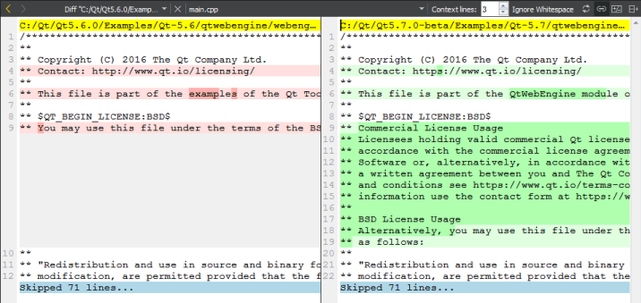

Comparing Files
You can use a diff editor to display unsaved changes in the current file or all open files or to compare any two text files that can be either versions of the same file or arbitrary files.
To view unsaved changes in the current file, select Tools > Diff > Diff Current File.
To view unsaved changes in all open files, select Tools > Diff > Diff Open Files.
To compare two files:
- Select Tools > Diff > Diff External Files.
- Select two files to compare.
Viewing the Changes

The changes are displayed in the Edit mode. Color coding is used to mark changed lines. By default, light red indicates lines that contain removed text (painted a darker red) in the left pane and light green indicates lines that contain added text (painted a darker green) in the right pane.
To revert the changes, right-click added text and then select Revert Chunk in the context menu. To apply the changes, select removed text and then select Apply Chunk.
To view the differences in a unified view where changed rows are placed below each other, select (Switch to Unified Diff Editor).
To switch back to the side-by-side view, select (Switch to Side by Side Diff Editor).
To only show text changes, select Ignore Whitespace.
To expand the context for the changes, set the number of unchanged lines to show in Context lines.
By default, the horizontal scroll bars in the left and right pane are synchronized. To use them independently of each other, select the  (Synchronize Horizontal Scroll Bars) button.
(Synchronize Horizontal Scroll Bars) button.
If the files change outside Qt Creator, select  (Reload Editor) to compare them again and to show the results.
(Reload Editor) to compare them again and to show the results.
To send a chunk of changes to a code pasting service, select Send Chunk to CodePaster in the context menu.
Changing the Colors
To change the default colors, select Tools > Options > Text Editor > Font & Colors. Create your own color scheme and select new colors for the following options:
- Diff File Line sets the color of the line that shows the path and filename of the changed file.
- Diff Context Line sets the color of the line that shows the number of hidden lines between changed lines.
- Diff Source Line sets the color of lines that contain removed text.
- Diff Source Character sets the color that indicates removed characters.
- Diff Destination Line sets the color of lines that contain added text.
- Diff Destination Character sets the color that indicates added characters.